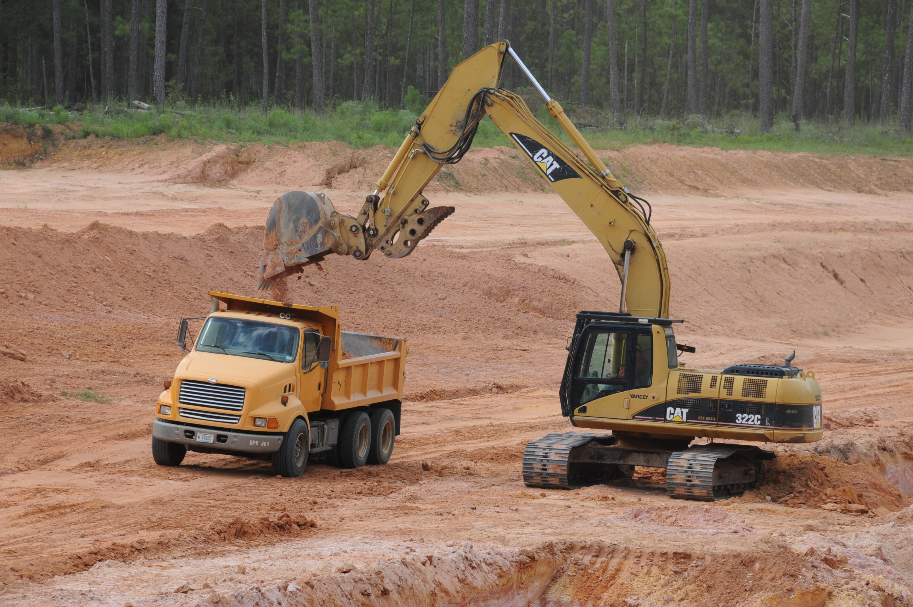
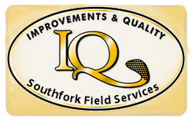

Service With A Smile
"It is my pleasure to recommend Southfork. I have used them for over thirty years, on hundreds of projects. Their work is professional and completed on time. I will definitely want to use them again on my next project and advise any other contractor to do the same."
-Ric McNall
Ric McNall Construction, Inc.
See All Our Testimonials
What Can We Do For You Today?
With all the companies out there that you can choose from, why would you want to choose Southfork? Well, whatever your earthmoving or dirt work needs Southfork has the experienced crew and the heavy duty digging equipment in terms of mini and large excavators to put behind your trenching, excavation, or foundation work. From construction cleanup and haul-off, to final grading, leveling, and boxblading, you'll be in good hands with our hard-working, customer-oriented work crews and staff. Because, for us here at Southfork, the end product is not a pond or a road or an airport tarmac. It is a satisfied customer.
Remember for a more in depth look at our specific services, check out our other more detailed pages below.
Next Section: "Our Specific Services"

That's Our Motto
